第 91 题
下列准则中，实现临界区互斥机制不强制要求遵循的是（ ）
A． 两个进程不能同时进入临界区 B． 不能进入临界区的执行态进程立即放弃CPU C． 进程等待进入临界区的时间是有限的 D． 允许进程访问空闲的临界资源 答案与解析 答案：B
为禁止两个进程同时进入临界区，同步机制应遵循以下准则： 1）空闲让进。临界区空闲时，可以允许一个请求进入临界区的进程立即进入临界区。 2）忙则等待。当已有进程进入临界区时，其他试图进入临界区的进程必须等待。 3）有限等待。对请求访问的进程，应保证能在有限时间内进入临界区，防止进程无限等待4）让权等待(原则上应该遵循，但非必须)。当进程不能进入临界区时，应立即释放处理器防止进程忙等待。故选B 不能进入临界区的执行态进程立即放弃CPU（让权等待）。
教材第 136 页 第 92 题
有两个并发执行的进程P1 和P2，共享初值为1 的变量x。P1 对x 加1，P2 对x 减1。加1 和减1 操作的指令序列分别如下所示，指令序列已经指定序号。两个操作完成后，x 的值为2 的序列可能为（ ） I．①②③④⑤⑥II．①②④⑤⑥③III．①④②⑤⑥③IV．④⑤①⑥②③
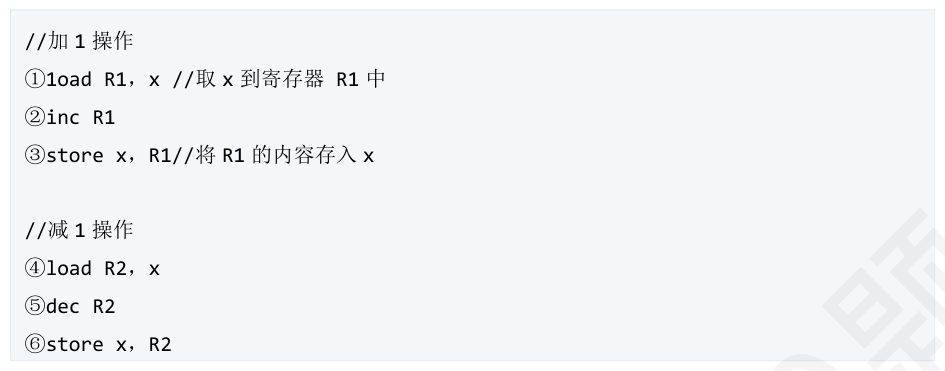
A． I，II，III B． I，III，IV C． II，III，IV D． I，II，IV 答案与解析 答案：C
x 值为2，就是加1 成功，减1 失败。因此只要在执行③和⑥之前，已经将数据x 的值取到R1 和R2中，并且，③操作在⑥操作之后即可。II，III，Ⅳ都满足条件，答案选C。
教材第 137 页 第 93 题
两个线程使用以下算法处理对打印机设备的共享，可能出现的问题是（ ）。
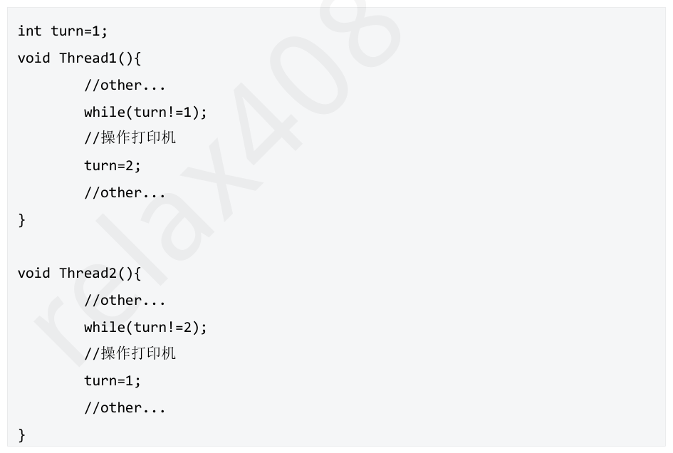
A． 两个线程都无法使用打印机，发生饥饿现象 B． 两个线程同时使用打印机，打印出现错误 C． 若线程1 没有使用打印机，转而执行其他操作，则线程2 也无法使用 D． 不会发生错误，两线程正常使用打印机 答案与解析 答案：C
本题考察单标志法的缺点，若Thread1 没有将turn 置为2，则线程2会一直等待。因此选C。
教材第 137 页 第 94 题
两个进程互斥的Peterson 算法描述如下：其中，（1）和（2）处的代码分别为（ ）
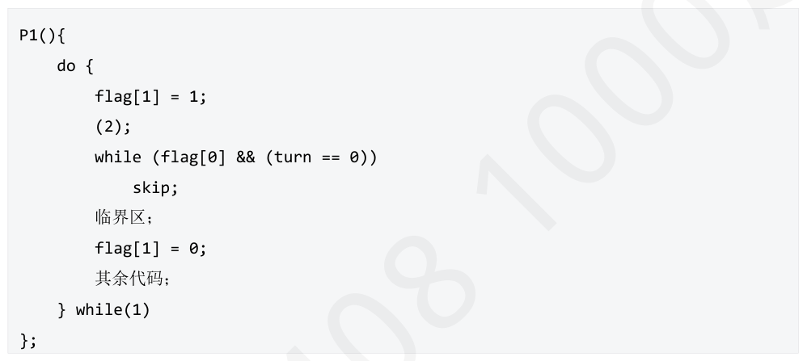
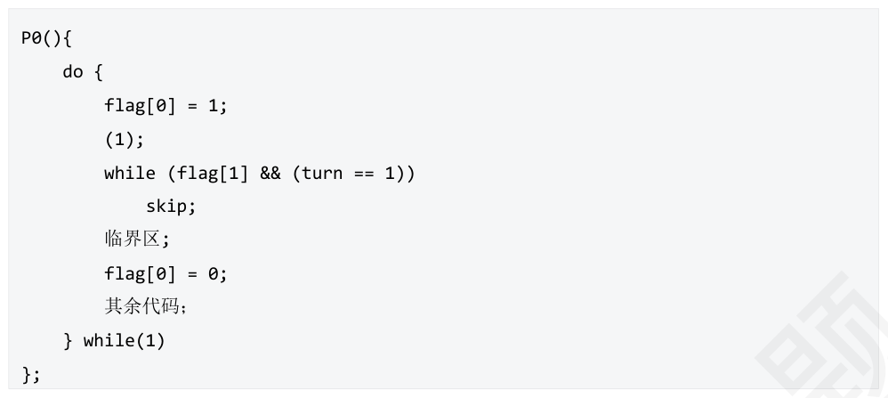
A． turn=0，turn=0 B． turn=0，turn=1 C． turn=1，turn=0 D． turn=l，turn=1 答案与解析 答案：C
Peterson算法中，设置flag标志表明进程是否请求进入临界区，又设置共享变量turn 规定进程进入临界区的顺序，当进程P0 想要使用临界区时，首先将自己的flag[0]标志设置为1，然后将turn设置为对方编号(进行礼让)，故本题选C。
教材第 137 页 第 95 题
进程P0 和P1 访问临界资源的伪代码实现如下，以下说法正确的是（ ）。
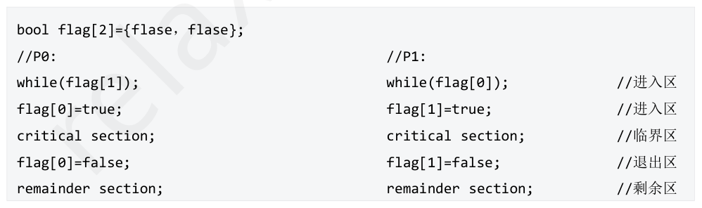
A． 不能保证进程互斥进入临界区，且违背了忙则等待原则 B． 不能保证进程互斥进入临界区，但是遵循忙则等待原则 C． 能保证进程互斥进入临界区，但是违背了忙则等待原则 D． 能保证进程互斥进入临界区，且遵循忙则等待原则 答案与解析 答案：A
以上算法是双标志先检查法，该算法相比于单标志法，满足了空闲让进原则，但是由于进程P0 可能会在判断while 语句满足后切换到P1，P1 也判断while满足后，两个进程就会同时访问临界区，因此该算法既不能保证进程互斥进入临界区，也违背了忙则等待原则，故本题选择A。
教材第 138 页 第 96 题
下列关于TestAndSet 指令和Swap 指令在实现互斥锁（Lock）机制时的叙述中，错误的是（ ）
A． TSL 指令通常会读取一个内存位置（锁变量）的当前值，并将一个新的非零值（例如TRUE）写入该位置，整个操作是原子的。 B． Swap 指令会原子地交换一个寄存器和一个内存位置（锁变量）的内容，进程通过检查交换后寄存器的值来判断是否获得锁。 C． 若使用TSL 指令实现自旋锁，当锁已被占用时，进程会循环执行TSL 指令直到成功获取锁，这会导致“忙等”。 D． 使用Swap 指令实现的互斥锁能满足“让权等待”准则，避免“忙等”现象。 答案与解析 答案：D
A正确，TestAndSet 指令的核心功能是原子地（不可中断地）读取一个内存字 （通常是锁变量）的旧值，并同时设置该内存字为一个新的预定值（通常表示“已加锁”，如TRUE或1）。返回的是读取到的旧值。这个原子性保证了在多处理器环境下，即使多个处理器同时尝试对同一个锁变量执行TSL，也只有一个能成功获取锁（即读取到锁变量为FALSE 时的旧值）。 B 正确，Swap（或XCHG）指令原子地交换一个CPU 寄存器的内容和内存中锁变量的内容。进程通常会将一个表示“尝试加锁”的值（如TRUE）放入寄存器，然后与锁变量进行交换。如果交换后寄存器中的值是表示“锁空闲”（如FALSE）的值，则表示该进程成功获得了锁。 C 正确，当使用TSL 指令实现自旋锁时，如果一个进程执行TSL 指令后发现锁已被占用（例如， TSL 返回TRUE），该进程会继续循环执行TSL 指令，不断尝试获取锁，直到成功为止。这种在等待锁的过程中CPU 持续执行测试指令而不放弃CPU 的做法，被称为“忙等”（busy-waiting）。 D 错误，Swap 指令本身也是一种硬件原子操作，用于实现互斥的基础。像TSL 指令一样，如果直接用Swap 指令在一个循环中不断尝试获取锁（即“自旋”），那么当锁被占用时，进程同样会处于 “忙等”状态，不断消耗CPU 时间，而不释放CPU。因此，单纯使用Swap 指令实现的互斥锁并不能满足“让权等待”准则。
教材第 138 页 第 97 题
互斥锁是一种用于解决临界区互斥问题的常用手段，对acquire（）获取锁或release（ ）释放锁的调用必须原子地执行，因此，互斥锁通常采用硬件原语（如Test&Set 指令或exchange 交换指令来实现），对于TSL 硬件原语实现的自旋锁与无忙等待锁，以下说法错误的是（ ）
A． 使用原子操作指令实现的互斥锁适用于单处理器或共享内存多处理器中任意数量的进程同步。 B． 自旋锁不能实现让权等待，但是阻塞锁可以 C． 自旋锁可以实现进程对临界区的先进先出（即按申请顺序访问临界区），不会导致进程饥饿 D． 互斥锁可用于多进（线）程之间，但是只能由获取锁的进（线）程对它进行解锁（即释放）； 答案与解析 答案：C
首先，我们先了解一下什么是互斥锁，其实它就是一个普通的变量，可以是bool类型也可以是int 类型（用0 表示锁释放，1 表示已上锁），上面这种实现出来的互斥锁，它是支持多临界区的互斥访问，什么意思呢，如果我们有好多个临界资源需要互斥访问，我们可以对它们分别实现一个互斥锁，即每把锁一个变量即可；注意，这个互斥锁变量，它是位于主存里的共享变量，不是某个进程私有的，否则实现不了一个进程拿到锁，别的进程进不去这种效果，因此我们说使用原子操作指令实现的互斥锁适用于单处理器或共享内存多处理器中任意数量的进程同步，因此A 选项正确。另外，我们要注意拿到锁和释放锁的必须是同一个进程，否则可能会出现A 进程拿到锁之后，但是B 进程却释放了这把锁，这时候C 获取了这把锁，这样就不满足互斥进入临界区这个规则了，因此在拿到锁和释放锁的时候，需要验证一下身份，例如当某个锁是空闲的时候，A 拿到了这把锁，这时候可以把A 的进程pid 记下来，之后释放锁的时候，验证一下pid 是否相等，是的话才可以释放锁，这样就可以保证互斥访问临界区了，因此D 正确； BC 选项的话，我们可以根据这两把锁的实现方式来看，自旋锁在拿不到锁的时候，并没有及时释放处理机，而是一直循环尝试是否可以获取锁，因此不符合让权等待，而阻塞锁在拿不到锁的时候，就将该进程加入阻塞队列里面，因此，阻塞锁可以实现让权等待，B选项正确。此外由于自旋锁具有随机性，没有队列这种数据结构保证进程按照先来后到的顺序使用CPU 资源，因此顺序可能会乱，另外如果当某个进程离开临界区时有多个进程等待进入临界区，就有可能导致某些进程由于每次临界区空闲的时候没有上处理机，或者轮到上处理机的时候，临界区有锁，从而导致饥饿，因此C 选项错误。扩展一下，以上这种使用原子操作实现的互斥锁还有可能导致死锁的发生，比如某个低优先级进程拿到了锁，在使用这把锁的时候，来了一个高优先级的进程获得处理机，并且它也想进入临界区，这时就发生了死锁。
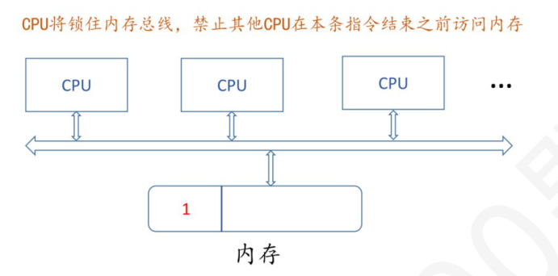
教材第 139 页 第 98 题
在有n 个进程共享一个互斥段，如果最多允许m 个进程(m<n)同时进入互斥段，则信号量的变化范围是
A． -(n-m)~m B． -m~0 C． -m-1~n D． -m-1~n-1 答案与解析 答案：A
允许m 个进程同时进入互斥段，说明初始值为m，当进入m 后，剩下n-m 个等待进入，因此下限是-（n-m）。因此范围是-(n+m，m)。
教材第 139 页 第 99 题
对信号量S 执行P 操作后，使进程进入等待队列的条件是（ ）
A． S.value>0 B． S.value<=0 C． S.value>=0 D． S.value<0 答案与解析 答案：D
由下列代码，value--后，if 判断当前value 的值为进程分配之后剩余的资源数，由这个逻辑，S.value<0 才会阻塞进程。
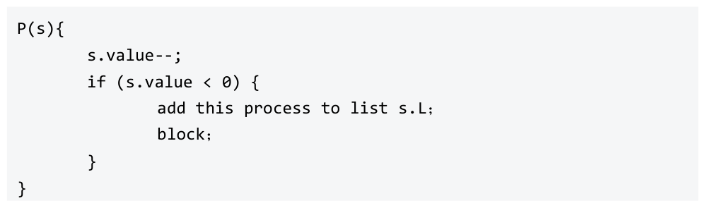
教材第 139 页 第 100 题
有一个信号量S，假如若干进程对S 执行36 次P 操作和20 次V 操作后，信号量S 的值变为0。假设未执行上述P/V 操作，若干进程对信号量S 执行19 次P 操作和1 次V 操作后，在信号量S 的等待队列中等待的进程数为（）。
A． 2 B． 3 C． 6 D． 7 答案与解析 答案：A
执行36次P操作和20次V操作后，信号量S 的值为0，说明信号量S 的初始值为16。对初始值为16的信号量S 执行19次P 操作和1 次V 操作后，计数信号量S 的值为16-19+1=-2。如果信号量的值是负值，那么它的绝对值等于等待进入临界区的进程数，因此有2 个进程在信号量S 的等待队列中等待，故本题选A。
教材第 139 页 第 101 题
对记录型信号量S 执行相关操作后，下列描述中正确的是（ ）
A． Ⅰ、Ⅳ B． Ⅱ、Ⅲ C． Ⅰ、Ⅲ D． Ⅱ、Ⅳ 答案与解析 答案：C
P、V 操作具体如下：可见，执行P 操作时，当S.value<0 时，阻塞当前进程；执行V 操作时，当S.value<=0 时，唤醒一个阻塞队列进程。选C。
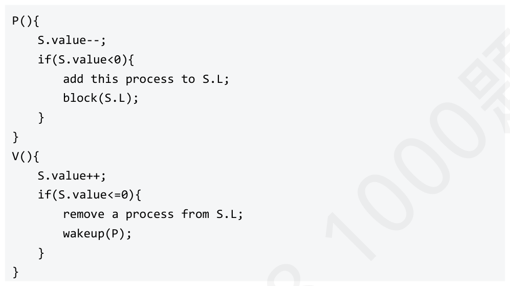
教材第 139 页 第 102 题
管程（Monitor）是一种高级同步机制，用于解决多个进程共享资源时的互斥与同步问题。下列关于管程的特性及其内部条件变量的叙述中，正确的是（）
A． 仅Ⅰ、Ⅱ B． 仅Ⅰ、Ⅲ C． 仅Ⅱ、Ⅳ D． 仅Ⅰ、Ⅱ、Ⅳ 答案与解析 答案：A
Ⅰ正确，管程通过其互斥进入的机制，保证了同一时刻只有一个进程可以在管程内部执行其定义的过程。这意味着所有对管程内部共享数据结构的访问都是互斥的，程序员无需再显式地使用互斥锁等低级同步原语来实现对这些共享资源的互斥。 Ⅱ正确，管程是一种程序设计语言级别的同步构造，它将共享数据以及对这些数据的操作封装起来，提供了比信号量更高层次的抽象。程序员使用管程时，不必关心底层的互斥和同步细节，使得并发程序的设计更为简单和不易出错。 Ⅲ错误，当一个进程在管程中调用条件变量的x.wait()操作时，该进程会被阻塞，并被放入与条件变量x 关联的等待队列中。重要的是，该进程会释放对管程的互斥访问权，以便其他进程可以进入管程执行。这避免了忙等待，并允许其他进程改变条件。 Ⅳ错误，条件变量的x.signal()操作的作用是唤醒一个（通常是等待队列中的第一个）因条件x 而阻塞的进程。如果没有进程正在等待条件x，则x.signal()操作通常不起任何作用（或被忽略），它不会像信号量的V 操作那样改变某个内部计数器的值。信号量是有状态的（其值会增减），而条件变量本身是无状态的，它仅作为进程排队和唤醒的机制。此处补充说明：在王道操作系统中，给出了条件变量的定义和使用：其中指出，当有进程在等待时才会执行x.signal()，此时执行x.signal()必定会唤醒阻塞进程，这与汤书中不同，汤书中对x.signal 定义如下：且汤书后文4.6.1 生产者—消费者问题中3.利用管程解决生产者—消费者问题时给出的实例也未有任何判断是否有进程在等待才执行x.signal()的语句。本题命制时，采用的汤书给出的说法。
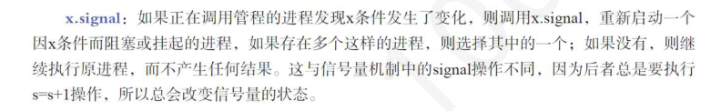
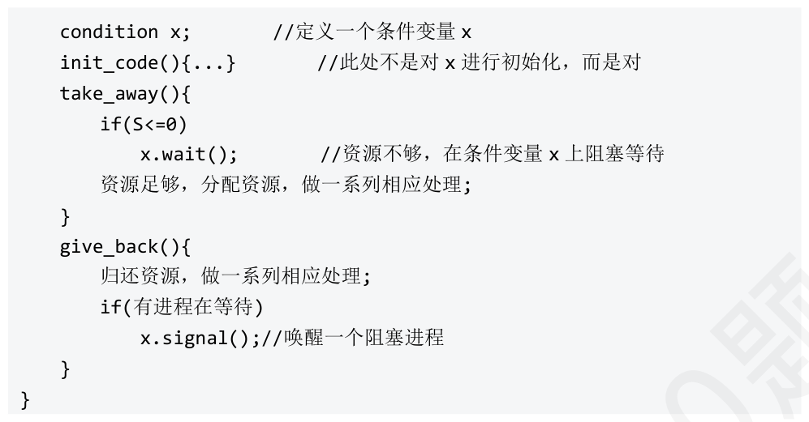
教材第 139 页 第 103 题
下列关于管程的叙述中，错误的是（ ）
A． 管程是一个基本程序单位，可以单独编译 B． 管程中不仅有数据，还有对数据的操作 C． 局部于管程的数据只能被局部于管程内的过程所访问 D． 封装于管程中的过程也可以访问管程外的数据 答案与解析 答案：D
实际上，管程中包含了面向对象的思想，将表征共享资源的数据结构及其对数据结构操作的一组过程(包括同步机制)，都集中并封装在了一个对象内部，隐藏了实现细节。封装于管程内部的数据结构仅能被封装于管程内部的过程所访问，管程外的任何过程都不能访问它;同时，封装于管程内部的过程也仅能访问管程内的数据结构。所有进程当要访问临界资源时，都只能通过管程间接访问，而管程每次只准许一个进程进入管程，执行管程内的过程，从而实现了进程互斥。管程是一种程序设计语言结构的成分，它和信号量有同等的表达能力，从语言的角度看管程主要有以下特性：
教材第 140 页 第 104 题
下列对于管程的说法中，正确的有（ ）
A． Ⅰ、Ⅱ、Ⅲ B． Ⅰ、Ⅲ、Ⅳ C． Ⅱ、Ⅲ、Ⅳ D． Ⅰ、Ⅱ、Ⅲ、Ⅳ 答案与解析 答案：C
Ⅰ错误，管程一次只允许一个进程进入，这是由管程的互斥性决定的。 Ⅱ正确，管程包含了面向对象的思想，将表达共享资源的数据结构和对其进行操作的进程封装在一个对象中，并封装了同步操作，从而对进程隐藏同步的细节，简化了调用同步功能的接口Ⅲ正确，管程机制可以便于集中管理分散于不同进程的临界区Ⅳ正确，管程是进程同步工具，避免了信号量机制中大量且分散的同步操作
教材第 140 页 第 105 题
以下关于同步互斥的各种实现方法中，说法错误的是（ ）
A． 禁用中断不可以在多处理机系统上实现同步原语 B． 软件方法如peterson，以及原子操作指令（TSL 指令和SWAP 指令）这些方法都不能实现让权等待 C． 互斥锁无法实现让权等待，属于忙等机制 D． 在管程中对条件变量执行signal 操作时，如果该条件变量对应的等待队列为空，则丢弃该信号执行空操作 答案与解析 答案：C
A 正确，如果多个进程运行在不同的CPU 上，每个进程都试图进入一个临界区，即使禁止中断，其他进程依旧能够在其他处理器上进入临界区。 B 正确，软件方法与原子操作均属于忙等机制，无法实现让权等待C 错误，首先要明晰：自旋锁≠互斥锁，王道操作系统将两者混为一谈，汤书中明确指出（汤小丹计算机操作系统慕课版4.7Linux 进程同步机制）两者的区别。自旋锁是一种忙等机制，无法实现让权等待，而互斥锁就是一个简化版的信号量，互斥锁加锁失败后，线程释放CPU，给其他线程，可以实现让权等待D 正确，这是条件变量与信号量的重要区别。二者的区别有：①条件变量是“没有值”的，仅实现了“排队等待”的功能；而信号量是有值的，信号量的值反映了剩余资源数，而在管程中，剩余资源数用共享数据结构记录。②条件变量的wait/signal 操作与信号量不同，如果在管程中的一个进程发信号，但没有在这个条件变量上等待的任务，则丢弃这个信号。
教材第 140 页 第 106 题
3 个进程共享4 个同类资源，这些资源的分配与释放只能每次1 个。已知每个进程最多需要2个该类资源，则该系统（）。
A． 有某进程可能永远得不到该类资源 B． 一定产生死锁 C． 进程请求该类资源立刻能得到 D． 一定没有死锁 答案与解析 答案：D
3 个进程，4 个同类资源，每个进程最多同时需要2 个该类资源。因此，至少能有一个进程可以同时获得2 个资源并顺序运行下去，系统必然无死锁。
教材第 140 页 第 107 题
下列说法正确的是（ ）
A． 当进程数大于资源数时，进程竞争资源必然产生死锁。 B． 一旦出现死锁，所有进程都不能运行。 C． 有m 个进程的操作系统出现死锁时，死锁进程的个数为1<k≤m。 D． 银行家算法是预防死锁发生的方法之一。 答案与解析 答案：C
A 错误。当进程数大于资源数时，如果资源分配得当则进程竞争资源不会产生死锁。 B 错误。系统出现死锁是指系统内一些进程被锁而不一定是全部进程被锁，即这部分进程因相互等待对方资源而处于死锁状态。 C 正确。处于死锁状态的进程都在相互等待对方占用的资源，因此处于死锁状态的进程至少有两个。如果系统的全部进程都因相互等待对方的资源而处于死锁状态，就会使整个系统处于瘫痪状态。 D 错误。银行家算法是避免死锁的一种方法。
教材第 140 页 第 108 题
设m 为互斥资源A 的数量，n 为系统中的并发进程数。当n 个进程共享m 个资源A 时，每个进程对资源A 的最大需求量为w，则下列情况可能会出现死锁的是（ ）。
A． m=3，n=3，w=2 B． m=2，n=2，w=1 C． m=4，n=3，w=2 D． m=5，n=2，w=3 答案与解析 答案：A
极端法：求出每个进程都发生死锁需要的最大资源数，在此基础上，再增加一个资源，则死锁一定不会发生。当n 个进程共享m个互斥资源时，每个进程的最大需求是w。则当m ≥n x ( w-1)+1 时，系统一定不发生死锁，显然B、C、D 对，A 错。
教材第 140 页 第 109 题
系统中有多个进程竞争使用多个同类型的独占型资源，每个进程一次只能申请一个，则下列的情况可能会发生死锁。（）
A． 资源数为4，进程数为3，每个进程最多需要1 个资源 B． 资源数为4，进程数为3，每个进程最多需要2 个资源 C． 资源数为6，进程数为2，每个进程最多需要3 个资源 D． 资源数为6，进程数为2，每个进程最多需要4 个资源 答案与解析 答案：D
D 选项当每个进程拥有3 个资源时，系统资源已分配完，而此时2 个进程都不能往前推进，彼此相互等待，从而形成死锁。
教材第 141 页 第 110 题
下列关于这死锁与饥饿的叙述中，错误的是（ ）
A． 死锁涉及一组进程，它们因相互等待对方持有的资源而均无法继续执行；饥饿则可能只针对单个或少数进程。 B． 死锁一旦发生，若无外部干预（如操作系统介入），相关进程将永远无法被唤醒；而处于饥饿状态的进程理论上仍有机会获得资源并执行。 C． 引起死锁的根本原因是资源不足以及进程推进顺序不当；引起饥饿的根本原因则通常是调度算法不公平或资源分配策略存在缺陷。 D． 发生死锁与饥饿的进程均属于阻塞态。 答案与解析 答案：D
A 正确，死锁是多个进程（至少两个）之间形成循环等待资源的状态，导致这些进程都无法继续。饥饿则可能发生在单个进程上，例如一个低优先级进程由于不断有高优先级进程到达而长时间得不到CPU。 B 正确，死锁是一种“僵持”状态，除非操作系统采取措施（如撤销进程、剥夺资源），否则死锁进程将永久等待。饥饿状态下，进程虽然长时间等待，但并非绝对没有机会，例如当高优先级进程执行完毕，或者调度策略发生变化（如动态优先级调整）时，饥饿的进程仍可能获得资源。 C 正确，死锁的产生需要满足互斥、请求和保持、不可剥夺、循环等待这四个必要条件，其中资源不足是前提，而进程推进顺序不当是形成循环等待的关键。饥饿则更多地与调度策略相关，如固定的低优先级可能导致进程持续得不到CPU，或者某些资源分配算法可能使得某些进程的请求总是被忽略。 D 错误，发生饥饿的进程可能处于就绪态(长期得不到CPU，如SJF算法的问题)，也可能处于阻塞态(如长期得不到所需的IO设备，如上述举例)；而发生死锁的进程必定处于阻塞态。
教材第 141 页 第 111 题
以下关于进程死锁的表述，正确的有（ ）。
A． 仅Ⅰ、Ⅱ B． 仅Ⅱ、Ⅳ C． 仅Ⅰ、Ⅱ、Ⅳ D． 仅Ⅱ、Ⅲ、Ⅳ 答案与解析 答案：C
Ⅰ正确，每个进程只能拥有一个资源，运行完毕后释放资源，不会产生死锁。 Ⅱ正确，死锁产生的必要条件之一是互斥条件，即资源在一段时间内只能被一个进程所占用。如果所有资源都可以被多个进程无冲突地共享访问，那么互斥条件就不成立，死锁也就不会发生。 Ⅲ错误，仅仅有优先级并不能完全避免死锁。例如，一个高优先级进程P_high 可能等待一个低优先级进程P_low 持有的资源，而P_low 又在等待另一个资源。如果这个等待链形成循环，即使有优先级，死锁依然可能发生。优先级调度可能会影响饥饿现象，但不能直接消除所有类型的死锁。 Ⅳ正确，循环等待条件是产生死锁的四个必要条件之一。如果能够破坏循环等待条件，例如通过资源有序分配法，确保进程请求资源时不会形成环路，那么死锁就不会发生。
教材第 141 页 第 112 题
在哲学家就餐问题中，若哲学家中同时存在左撇子和右撇子，左撇子会先拿左手边的筷子，而右撇子会先拿右手边的筷子。这种情况下不会发生死锁，因为这破坏了（）
A． 互斥条件 B． 请求与保持条件 C． 不剥夺条件 D． 循环等待条件 答案与解析 答案：D
这破坏了循环等待条件。如果存在所有左边的哲学家等待右边哲学家放下筷子的循环等待，则每个哲学家肯定已获得左边的筷子，但还没有获得右边的筷子，这与存在右撇子的情况不符。同理，亦不存在相反的循环等待链，而且，因不相邻的哲学家之间不存在竟争资源关系，所以也不可能存在5 个以下的哲学家的循环等待链。
教材第 141 页 第 113 题
对所有资源进行编号，并要求进程按严格增加（或减少）的顺序来请求资源，这是死锁预防的一种方式，破坏了死锁四个必要条件中的（）。
A． 互斥条件 B． 占有并请求条件 C． 不可抢占条件 D． 循环等待条件 答案与解析 答案：D
循环等待条件指系统发生死锁时，一定存在一条进程请求资源的循环等待链。题干中对所有资源进行编号，并要求进程只按严格增加(或减少)的顺序来请求资源，破坏了死锁产生的循环等待条件，选D。
教材第 141 页 第 114 题
死锁预防是保证系统不进入死锁状态的一种静态策略，它通过破坏死锁产生的四个必要条件中的一个或多个来预防死锁，下列破坏了死锁产生的“请求和保持条件”的是（）。
A． 银行家算法 B． 一次性分配策略 C． 剥夺资源法 D． 有序资源分配法 答案与解析 答案：B
请求和保持条件指进程已经占用至少一个资源，但又提出了新的资源请求，而该资源已被其他进程占用，此时进程请求阻塞，且不会释放已占用的资源。为所有进程一次性分配其所需的资源破坏了死锁产生的请求和保持条件，选B。
教材第 141 页 第 115 题
关于死锁预防与死锁避免的说法，正确的是（ ）
A． 死锁预防就是防止系统进入到不安全状态 B． 可以通过防止系统进入不安全状态来避免死锁的发生 C． 死锁预防通常采用银行家算法 D． 银行家算法会规定进程申请资源的顺序 答案与解析 答案：B
死锁预防是破坏死锁发生的必要条件，死锁避免是避免系统进入不安全状态从而防止死锁的发生，所以B 正确，A、C 错误。银行家算法不会规定进程申请资源的顺序，只会决定是否给进程分配其申请的资源，D 错误。
教材第 141 页 第 116 题
下列关于死锁与安全状态的叙述中，错误的是（ ）
A． 仅Ⅰ、Ⅱ B． 仅Ⅲ、Ⅳ C． 仅Ⅰ、Ⅳ D． 仅Ⅱ、Ⅲ 答案与解析 答案：B
Ⅲ、Ⅳ错误。 Ⅰ正确，安全状态的定义是，系统能按某种进程推进顺序（存在一个安全序列），为每个进程分配其所需的资源，直至满足每个进程对资源的最大需求，使每个进程都可顺利完成。如果系统处于安全状态，就一定可以找到至少一个这样的序列，从而避免了死锁的发生。 Ⅱ正确，如果系统发生了死锁，意味着存在一组进程循环等待资源，它们都无法继续执行，也无法释放资源。在这种情况下，不可能找到一个安全序列，使得所有进程都能顺利完成。因此，死锁状态一定是不安全状态。 Ⅲ错误，不安全状态是指系统不一定能找到一个安全序列。它意味着系统存在进入死锁状态的可能性，但并非一定会发生死锁。在不安全状态下，如果进程后续的资源请求和释放顺序恰当，仍然有可能避免死锁的发生。 Ⅲ错误，系统当前未发生死锁，并不意味着它一定处于安全状态。系统可能正处于一个不安全状态，只是尚未满足死锁发生的全部条件，或者进程的资源请求顺序尚未导致死锁。不安全状态是死锁的可能前兆，但当前不死锁不代表未来不会死锁，也不代表当前状态是安全的。
教材第 142 页 第 117 题
假设有4 个进程P0、P1、P2、P3，共享3 类资源R1、R2、R3，这些资源总数分别为7、7、 7，T 时刻的资源分配情况如下表，此时存在的一个安全序列是（ ）
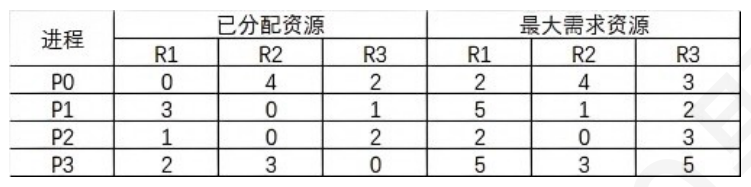
A． P1，P2，P0，P3 B． P1，P2，P3，P0 C． P2，P0，P1，P3 D． P2，P1，P3，P0 答案与解析 答案：C
当前已分配资源总数为：(0，4，2)+(3，0，1)+(1，0，2)+(2，3，0)=(6，7， 5)，剩余可分配资源数为：(7，7，7)-(6，7，5)=(1，0，2) 各进程对资源的需求量： P0：(2，4，3)-(0，4，2)=(2，0，1) P1：(5，1，2)-(3，0，1)=(2，1，1) P2：(2，0，3)-(1，0、2)=(1，0，1) P3：(5，3，5)-(2，3，0)=(3，0，5) 因此初始时只有进程P2 可满足需求，排除选项A 和B。给进程P2 分配资源，则P2 完成后剩余可分配资源：(1，0，2)+(1，0，2)=(2，0，4)。接下来只有进程P0 可满足需求，只有选项C 满足。给进程P0 分配资源，则P0 完成后剩余可分配资源：(2，0，4)+（0，4，2）=（2，4，6），然后依次分配进程P1、P3，答案为选项C。
教材第 142 页 第 118 题
两个进程A 和B，每一个进程都需要申请资源1、2、3 各一个，在系统种三种资源各只有一个。假如这两个进程都以1、2、3 的次序申请，系统将不会发生死锁。但如果A 以3、2、1 的次序申请， B 以1、2、3 的次序申请，则死锁可能发生。两个进程申请资源的顺序如果不确定，那么系统保证不发生死锁的概率是（）
A． 1/9 B． 1/6 C． 1/3 D． 1/12 答案与解析 答案：C
假设每个进程申请三种资源为随机的，申请的顺序可能性一样；此时，每个进程申请顺序种类为3！，即6 种。两者结合则有6×6=36 种可能的排列。不难看出，只要是两个进程第一次申请的资源相同，则不会发生死锁，即其中一个进程得到第一个资源，另外一个进程因为等待此记录而阻塞，不会申请其他资源，确保所有资源都可由第一个进程读完后再释放第二个进程。两个进程第一次同时申请资源1 的排列有4 种。 A：1，2，3；B：1，2，3A：1，2，3；B：1，3，2A：1，3，2；B：1，2，3A：1，3，2；B：1，3，2同理，两个进程第一次同时申请资源2 的排列为4 种，同时申请资源3 的排列也为4 种，也就是共有12 种排列是不会发生死锁的，故系统保证不发生死锁的概率为12/36=1/3。
教材第 142 页 第 119 题
系统某一时刻的进程数及资源分配情况如下：系统剩余资源数量=(3，3，2)。根据银行家算法，下列选项正确的是（ ）。
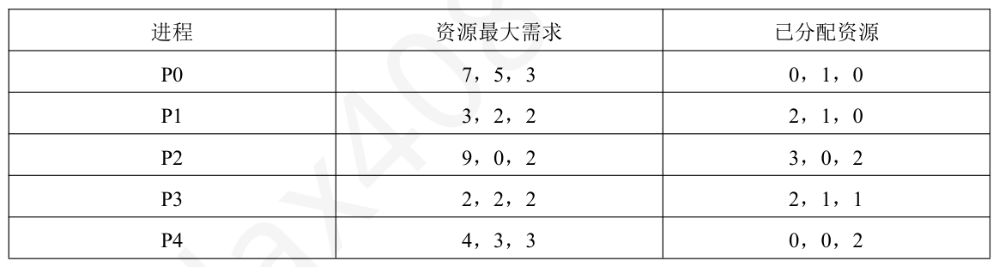
A． 系统处于不安全状态 B． 系统处于安全状态，可能的安全序列为<P2，P0，P4，P1，P3> C． 系统处于安全状态，可能的安全序列为<P1，P3，P0，P2，P4> D． 系统处于安全状态，可能的安全序列为<P4，P0，P1，P3，P2> 答案与解析 答案：C
当前系统剩余资源数量为(3，3，2)，满足P1 和P3 的资源需求。分配给P1，P1释放资源后，系统的剩余资源数量为(5，4，2)，满足P3 的资源需求，分配给P3，P3 释放资源后，系统剩余资源数量为(7，5，3)，满足P0 的资源需求，分配给P0，P0 释放资源后，系统剩余资源数量为 (7，6，3)，满足P2 的资源需求，分配给P2，P2 释放资源后，系统剩余资源数量为(10，6，5)，满足P4 的资源需求，分配给P4，运行结束，系统没有进入不安全状态，可能的安全序列为<P1，P3，P0， P2，P4>，选C。计算Need矩阵： Max-Allocation =Need
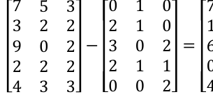
教材第 142 页 第 120 题
假设4 个进程共享三类资源A、B、C，这些资源总数分别为10、6、7。T 时刻的资源分配情况如下表所示，以下叙述正确的是（）。
A． 该时刻系统不安全 B． 该时刻系统安全，存在一条安全序列 C． 该时刻系统安全，存在两条安全序列 D． 该时刻系统安全，存在四条安全序列 答案与解析 答案：D
首先计算需求矩阵Max-Allocation =Need然后计算系统剩余资源数：(10，6，7)-(9，5，7)=(1，1，0)，显然满足进程P4 的资源需求，分配给进程P4，P4 释放资源后，系统剩余资源数为(4，2，4)，满足进程P1和P2 的资源需求，此时：
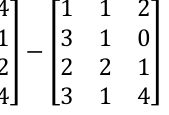
教材第 142 页